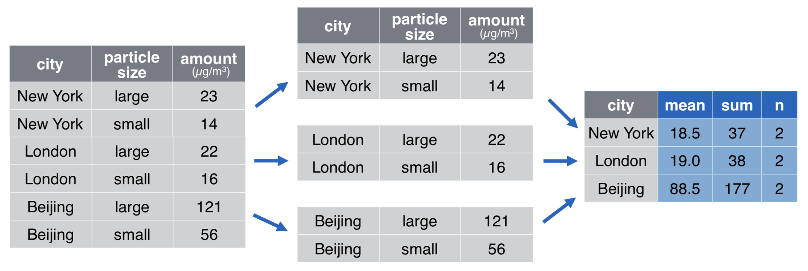
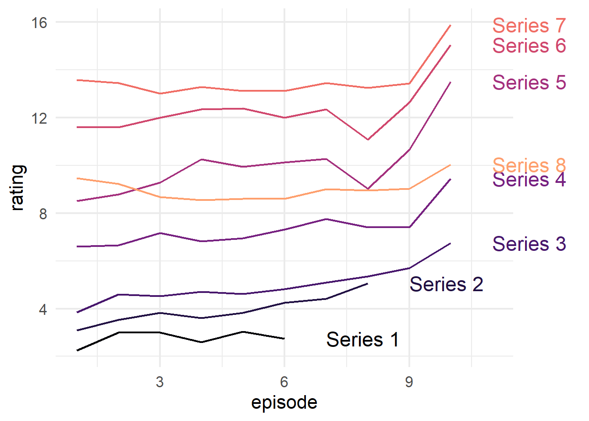

Rows: 187
Columns: 13
$ unitid <dbl> 228343, 177719, 367884, 149781, 135364, 212601, 133979,…
$ school <chr> "Southwestern University", "Barnes-Jewish College Goldf…
$ type <chr> "private", "private", "private", "private", "private", …
$ city <chr> "Georgetown", "Saint Louis", "Fort Myers", "Wheaton", "…
$ state <chr> "TX", "MO", "FL", "IL", "GA", "PA", "FL", "CA", "IN", "…
$ region <chr> "Southwest", "Plains", "Southeast", "Great Lakes", "Sou…
$ admission_rate <dbl> 0.4903, NA, 0.6121, 0.8481, 0.5000, 0.7552, 0.3999, 0.5…
$ act <dbl> 26, NA, NA, 29, NA, 23, NA, 22, 25, 31, NA, NA, 20, 20,…
$ undergrads <dbl> 1507, 569, 832, 2358, 235, 2866, 1049, 4516, 2120, 1545…
$ cost <dbl> 55886, NA, 27425, 49214, NA, 44896, 27460, 58014, 46440…
$ grad_rate <dbl> 0.6945, NA, 0.2621, 0.8878, 0.5000, 0.6770, 0.3644, 0.7…
$ fy_retention <dbl> 0.8571, NA, 0.4783, 0.9262, NA, 0.8217, 0.6355, 0.8179,…
$ fedloan <dbl> 0.5105, 0.8185, 0.6213, 0.4902, 0.5529, 0.5524, 0.6755,…Data Wrangling:
Groups &
Tidy Data
Day 08
The College Scorecard
The College Scorecard is designed to increase transparency, putting the power in the hands of the public — from those choosing colleges to those improving college quality — to see how well different schools are serving their students.
Using %>% or |>
We begin by building up a series of pipes:
The |> (base) pipe
|>pipe operator was introduced in R v4.1For simple uses, acts the same as
%>%but is more rigidI’ll use both in class examples, but you can use
|>or%>%
Calculating Summaries
Computing statistics: summarize
collapse many values down into a statistic
summarize(data, newstat = fun(var))
applies thefunfunction tovarvariable(s) and returns one value innewstatcolumn
Computing statistics: summarize
Average and SD of cost in a data frame format:
colleges %>%
summarize(
avg_cost = mean(cost, na.rm = TRUE),
sd_cost = sd(cost , na.rm = TRUE)
)# A tibble: 1 × 2
avg_cost sd_cost
<dbl> <dbl>
1 36620. 16244.mean(colleges$cost, na.rm = TRUE)[1] 36619.72sd(colleges$cost, na.rm = TRUE)[1] 16243.9Your turn
Using the flights data from the {nycflights23} package, use summarize() to compute statistics about the data:
The lowest and highest
distancetraveledThe lowest and highest
air_timeThe median
dep_delay
Your turn
Using the flights data from the {nycflights23} package, extract the rows for Delta flights. (Hint: the carrier shortcode code is “DL”)
Then use summarize() and a summary function to find:
The number of flights in this subset
The median
dep_delay. How does it compare to the overall median?
You should do both (1) and (2) in a single pipeline
group_by()
Groups cases by common values of one or more columns
colleges %>%
group_by(state)# A tibble: 187 × 13
# Groups: state [44]
unitid school type city state region admission_rate act undergrads cost
<dbl> <chr> <chr> <chr> <chr> <chr> <dbl> <dbl> <dbl> <dbl>
1 228343 Southwe… priv… Geor… TX South… 0.490 26 1507 55886
2 177719 Barnes-… priv… Sain… MO Plains NA NA 569 NA
3 367884 Hodges … priv… Fort… FL South… 0.612 NA 832 27425
# ℹ 184 more rows
# ℹ 3 more variables: grad_rate <dbl>, fy_retention <dbl>, fedloan <dbl>How does this help us?
Spit-apply-combine

Statistics by group: group_by + summarize
Summary statistics by state
colleges %>%
group_by(state) %>%
summarize(
n_schools = n(),
avg_cost = mean(cost, na.rm = TRUE),
min_size = min(undergrads, na.rm = TRUE),
max_size = max(undergrads, na.rm = TRUE)
)# A tibble: 44 × 5
state n_schools avg_cost min_size max_size
<chr> <int> <dbl> <dbl> <dbl>
1 AL 4 22242. 245 7785
2 AR 3 43816. 512 1447
3 AZ 2 33388. 803 33715
4 CA 9 42807. 43 23337
5 CO 2 45574 5755 8448
6 CT 3 29895. 174 4425
7 FL 5 34747. 39 2401
8 GA 6 27961 235 9742
9 HI 1 36765 1558 1558
10 IA 1 NaN 339 339
# ℹ 34 more rowsYour turn
Use group_by(), summarize(), and slice_max() to display the five dest airports with the most flights from NYC airports in 2023. Your display should include the median flight delay for these airports along with the number of flights to each airport.
Calculating counts
count() can be used as a short cut to group_by() + summarize() if you are only calculating counts
colleges %>%
group_by(state) %>%
summarize(n = n())# A tibble: 44 × 2
state n
<chr> <int>
1 AL 4
2 AR 3
3 AZ 2
4 CA 9
5 CO 2
6 CT 3
7 FL 5
8 GA 6
9 HI 1
10 IA 1
# ℹ 34 more rowscolleges %>% count(state)# A tibble: 44 × 2
state n
<chr> <int>
1 AL 4
2 AR 3
3 AZ 2
4 CA 9
5 CO 2
6 CT 3
7 FL 5
8 GA 6
9 HI 1
10 IA 1
# ℹ 34 more rowsCalculations by group: group_by + mutate
Calculate z-scores within regions
colleges %>%
group_by(region) %>%
mutate(z_cost = (cost - mean(cost, na.rm = TRUE)) / sd(cost, na.rm = TRUE)) %>%
relocate(unitid:region, z_cost, everything())# A tibble: 187 × 14
# Groups: region [10]
unitid school type city state region z_cost admission_rate act undergrads
<dbl> <chr> <chr> <chr> <chr> <chr> <dbl> <dbl> <dbl> <dbl>
1 228343 South… priv… Geor… TX South… 1.51 0.490 26 1507
2 177719 Barne… priv… Sain… MO Plains NA NA NA 569
3 367884 Hodge… priv… Fort… FL South… -0.467 0.612 NA 832
4 149781 Wheat… priv… Whea… IL Great… 1.06 0.848 29 2358
5 135364 Luthe… priv… Lith… GA South… NA 0.5 NA 235
6 212601 Ganno… priv… Erie PA Mid E… 0.261 0.755 23 2866
7 133979 Flori… priv… Miam… FL South… -0.465 0.400 NA 1049
8 117140 Unive… priv… La V… CA Far W… 1.14 0.548 22 4516
9 152567 Trine… priv… Ango… IN Great… 0.849 0.816 25 2120
10 237057 Whitm… priv… Wall… WA Far W… 1.79 0.559 31 1545
# ℹ 177 more rows
# ℹ 4 more variables: cost <dbl>, grad_rate <dbl>, fy_retention <dbl>,
# fedloan <dbl>ungroup()
Once data are grouped, they remain grouped until you manually ungroup them
Some summary functions ungroup them for you, e.g.,
count()andsummarize()
. . .
colleges %>%
group_by(region) %>%
mutate(z_cost = (cost - mean(cost, na.rm = TRUE)) / sd(cost, na.rm = TRUE)) %>%
ungroup() %>%
summarize(mean_z = mean(z_cost, na.rm = TRUE))# A tibble: 1 × 1
mean_z
<dbl>
1 1.49e-17# A tibble: 10 × 2
region mean_z
<chr> <dbl>
1 Far West -9.08e-17
2 Great Lakes 1.40e-16
3 Mid East 1.10e-16
4 New England -1.56e-16
5 Outlying Areas -2.22e-16
6 Plains -2.62e-17
7 Rocky Mountains 0
8 Southeast 1.23e-18
9 Southwest 6.94e-18
10 US Service Schools NaN Aside: code commenting
In R, you can use # for adding comments to your code. Any text that follows the # will be printed as-is and won’t be run as code. This is useful for leaving comments in your code and for temporarily disabling certain lines of code for debugging.
colleges %>%
group_by(state) %>%
summarize(
n_schools = n(), # This is a reminder to me
# avg_cost = mean(cost, na.rm = TRUE), # This line isn't run
min_size = min(undergrads, na.rm = TRUE),
max_size = max(undergrads, na.rm = TRUE)
)# A tibble: 44 × 4
state n_schools min_size max_size
<chr> <int> <dbl> <dbl>
1 AL 4 245 7785
2 AR 3 512 1447
3 AZ 2 803 33715
4 CA 9 43 23337
5 CO 2 5755 8448
6 CT 3 174 4425
7 FL 5 39 2401
8 GA 6 235 9742
9 HI 1 1558 1558
10 IA 1 339 339
# ℹ 34 more rowsAside: code commenting
And it works especially well when you’ve used chaining in your code
colleges %>%
#group_by(state) %>%
summarize(
n_schools = n(),
avg_cost = mean(cost, na.rm = TRUE),
min_size = min(undergrads, na.rm = TRUE),
max_size = max(undergrads, na.rm = TRUE)
)# A tibble: 1 × 4
n_schools avg_cost min_size max_size
<int> <dbl> <dbl> <dbl>
1 187 36620. 0 33715Intro to tidy data


Bakeoff ratings
- Ratings data for each episode in series 1-8 (in millions of viewers)
. . .
# A tibble: 8 × 11
series e1 e2 e3 e4 e5 e6 e7 e8 e9 e10
<dbl> <dbl> <dbl> <dbl> <dbl> <dbl> <dbl> <dbl> <dbl> <dbl> <dbl>
1 1 2.24 3 3 2.6 3.03 2.75 NA NA NA NA
2 2 3.1 3.53 3.82 3.6 3.83 4.25 4.42 5.06 NA NA
3 3 3.85 4.6 4.53 4.71 4.61 4.82 5.1 5.35 5.7 6.74
4 4 6.6 6.65 7.17 6.82 6.95 7.32 7.76 7.41 7.41 9.45
5 5 8.51 8.79 9.28 10.2 9.95 10.1 10.3 9.02 10.7 13.5
6 6 11.6 11.6 12.0 12.4 12.4 12 12.4 11.1 12.6 15.0
7 7 13.6 13.4 13.0 13.3 13.1 13.1 13.4 13.3 13.4 15.9
8 8 9.46 9.23 8.68 8.55 8.61 8.61 9.01 8.95 9.03 10.0 Source: bakeoff R package
Discuss
Is this dataset in tidy format? Why or why not?
If not, what would a tidy data set look like? Sketch out the first few rows of this data set in tidy format
{tidyr}
Reshape the layout of tabular data
Part of the
tidyverse

What variables are needed to make this graph?

Goal
Want to reshape the data to be in tidy format:
# A tibble: 8 × 11
series e1 e2 e3 e4 e5 e6 e7 e8 e9 e10
<dbl> <dbl> <dbl> <dbl> <dbl> <dbl> <dbl> <dbl> <dbl> <dbl> <dbl>
1 1 2.24 3 3 2.6 3.03 2.75 NA NA NA NA
2 2 3.1 3.53 3.82 3.6 3.83 4.25 4.42 5.06 NA NA
3 3 3.85 4.6 4.53 4.71 4.61 4.82 5.1 5.35 5.7 6.74
4 4 6.6 6.65 7.17 6.82 6.95 7.32 7.76 7.41 7.41 9.45
5 5 8.51 8.79 9.28 10.2 9.95 10.1 10.3 9.02 10.7 13.5
6 6 11.6 11.6 12.0 12.4 12.4 12 12.4 11.1 12.6 15.0
7 7 13.6 13.4 13.0 13.3 13.1 13.1 13.4 13.3 13.4 15.9
8 8 9.46 9.23 8.68 8.55 8.61 8.61 9.01 8.95 9.03 10.0 # A tibble: 80 × 3
series epsiode rating
<dbl> <chr> <dbl>
1 1 e1 2.24
2 1 e2 3
3 1 e3 3
4 1 e4 2.6
5 1 e5 3.03
6 1 e6 2.75
7 1 e7 NA
8 1 e8 NA
9 1 e9 NA
10 1 e10 NA
# ℹ 70 more rowspivot_longer()
pivot_longer()
pivot_longer()
pivot_longer()
wider \(\rightarrow\) longer ratings
# A tibble: 80 × 3
series episode rating
<dbl> <chr> <dbl>
1 1 e1 2.24
2 1 e2 3
3 1 e3 3
4 1 e4 2.6
5 1 e5 3.03
6 1 e6 2.75
7 1 e7 NA
8 1 e8 NA
9 1 e9 NA
10 1 e10 NA
# ℹ 70 more rowsparse_number()

Other parsing functions
parse_character
parse_date
parse_double
parse_double
parse_factor
parse_integer
parse_logical
parse_number
parse_time
The parse_* functions are from readr
Try it: messy_ratings
Tidy this data set by
- Selecting the
seriesande*_7daycolumns - Pivoting the data to add a column for
episodeand a column forrating(we’ll clean up the episode column later)
messy_ratings2 <- read_csv("https://stat220-w26.github.io/data/messy_ratings2.csv")
messy_ratings2# A tibble: 8 × 21
series e1_7day e1_28day e2_7day e2_28day e3_7day e3_28day e4_7day e4_28day
<dbl> <dbl> <dbl> <dbl> <dbl> <dbl> <dbl> <dbl> <dbl>
1 1 2.24 NA 3 NA 3 NA 2.6 NA
2 2 3.1 NA 3.53 NA 3.82 NA 3.6 NA
3 3 3.85 NA 4.6 NA 4.53 NA 4.71 NA
4 4 6.6 NA 6.65 NA 7.17 NA 6.82 NA
5 5 8.51 NA 8.79 NA 9.28 NA 10.2 NA
6 6 11.6 11.7 11.6 11.8 12.0 NA 12.4 12.7
7 7 13.6 13.9 13.4 13.7 13.0 13.4 13.3 13.9
8 8 9.46 9.72 9.23 9.53 8.68 9.06 8.55 8.87
# ℹ 12 more variables: e5_7day <dbl>, e5_28day <dbl>, e6_7day <dbl>,
# e6_28day <dbl>, e7_7day <dbl>, e7_28day <dbl>, e8_7day <dbl>,
# e8_28day <dbl>, e9_7day <dbl>, e9_28day <dbl>, e10_7day <dbl>,
# e10_28day <dbl>Cleaning episode
# A tibble: 80 × 3
series episode rating
<dbl> <chr> <dbl>
1 1 e1_7day 2.24
2 1 e2_7day 3
3 1 e3_7day 3
4 1 e4_7day 2.6
5 1 e5_7day 3.03
6 1 e6_7day 2.75
7 1 e7_7day NA
8 1 e8_7day NA
9 1 e9_7day NA
10 1 e10_7day NA
# ℹ 70 more rowsseparate()
separate()
separate()
separate()
Cleaning episode
# A tibble: 80 × 4
series episode period rating
<dbl> <chr> <chr> <dbl>
1 1 e1 7day 2.24
2 1 e2 7day 3
3 1 e3 7day 3
4 1 e4 7day 2.6
5 1 e5 7day 3.03
6 1 e6 7day 2.75
7 1 e7 7day NA
8 1 e8 7day NA
9 1 e9 7day NA
10 1 e10 7day NA
# ℹ 70 more rowsWrap it up
- Clean the
episodeandperiodcolumn - Make a line plot with episode on the x-axis, rating on the y-axis, colored by series. (You will also need to map the
groupaesthetic to series)